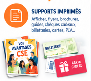
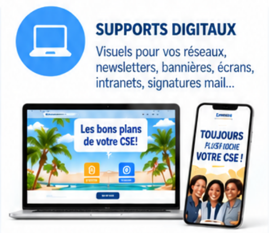
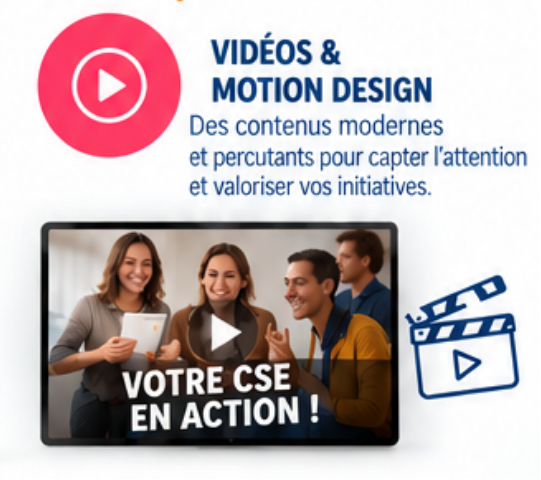
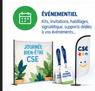
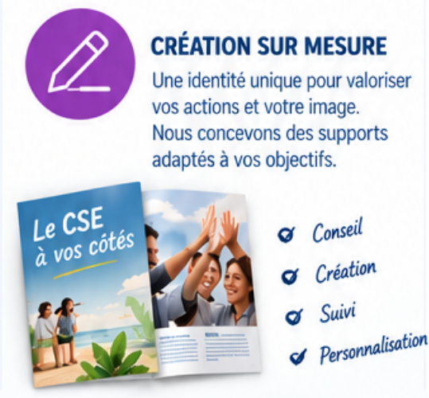
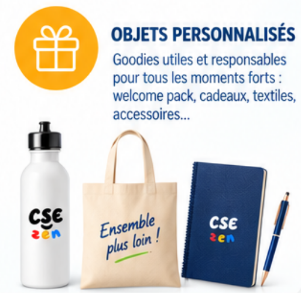

Essentiel
Une présence régulière
1 réseau au choix
- Jusqu’à 2 publications / mois
- Modération hebdomadaire
- Reporting mensuel simplifié
- Délégation partielle légère
Community management, création de contenus, réseaux sociaux, print, vidéo et événementiel : CSE ZEN vous aide à informer vos salariés, animer votre communauté et valoriser vos actions.

Vous manquez de temps pour alimenter vos réseaux, créer vos publications et maintenir le lien avec les salariés ? L’équipe CSE ZEN peut prendre en charge tout ou partie de votre communication, avec un niveau de délégation adapté à votre organisation.
1 réseau au choix
1 réseau au choix
1 réseau au choix
Jusqu’à 2 réseaux
Jusqu’à 3 réseaux
De la conception à la production, CSE ZEN Communication vous accompagne avec des créations utiles, cohérentes et adaptées à vos temps forts.

Affiches, flyers, brochures, guides, chèques cadeaux, billetterie, cartes et PLV pour rendre vos actions visibles et immédiatement identifiables.

Visuels pour vos réseaux, newsletters, bannières, écrans, intranets et signatures mail afin d'assurer une présence cohérente sur tous vos canaux.

Des contenus modernes et percutants pour capter l’attention, expliquer vos actions et donner davantage de portée à vos initiatives.

Kits, invitations, habillages, signalétique et supports dédiés à vos journées bien-être, rencontres, salons et autres temps forts.

Une identité unique pour valoriser vos actions et votre image. Conseil, création, suivi et personnalisation selon vos objectifs et votre univers.

Goodies utiles et responsables pour vos moments forts : welcome packs, cadeaux, textiles et accessoires pensés pour durer.
Implantée en Normandie, l’équipe privilégie l’écoute, la réactivité et des supports responsables pour un impact positif.
Conseil, création, suivi et personnalisation : construisons les supports adaptés à vos objectifs, à votre identité et à vos temps forts.